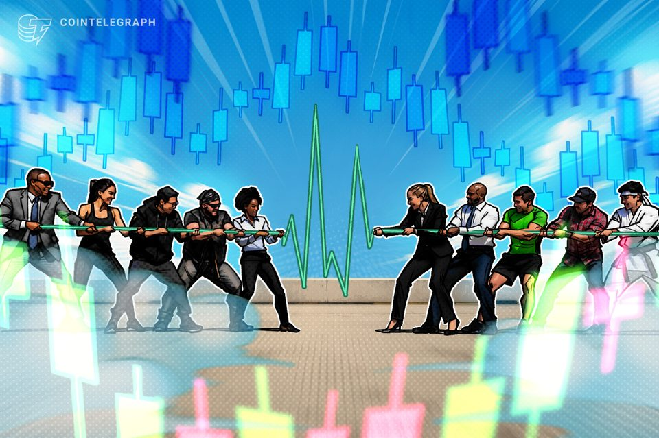
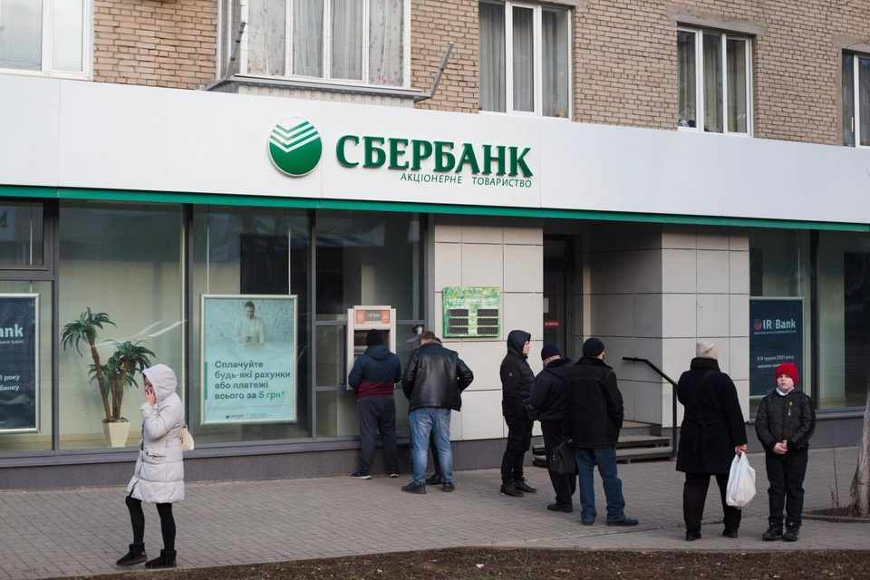
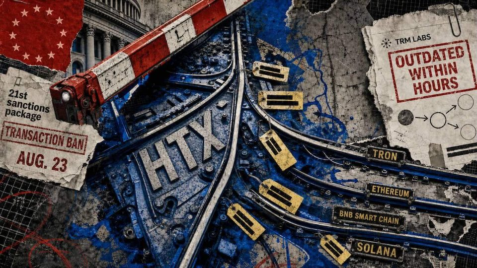

July 25, 2026
Daily headline set with source diversity, cleaned links, and local static rendering.

Robinhood in talks with Crypto.com over prediction markets: WSJ
While prediction market companies in the US continue to face legal battles between state and federal authorities, Robinhood is reportedly considering expanding its services.
Samsung Wallet is getting native stablecoins – and it could make one token the default for 800M users
Issuer, chain, custody, redemption, market and launch choices will determine whether Wallet becomes a native transaction route or a narrower integration. The post Samsung Wallet is getting native stablecoins – and it...

Russia's largest bank Sberbank plans crypto trading infrastructure by December
Russia's largest bank Sberbank plans crypto trading infrastructure by December

What Is an AI Kill Switch and Why Do US Lawmakers Want One?
The AI Kill Switch Act would let Homeland Security order frontier AI throttled or shut down, with fines up to $20 million a day for defying it.
Bitcoin advocacy group to join US State Department's ‘digital freedom' program
The Bitcoin Policy Institute and three partner organizations will be able to send employees to work alongside State Department officials to address issues including digital freedom.

EU expands HTX crackdown as Russia-linked crypto network keeps shifting its financial rails
The European Union has sanctioned HTX, widening a Russia crackdown that has already affected counterparties beyond the exchange. The bloc placed Huobi Global S.A., the entity behind HTX, under a transaction ban in its...
North Korea arrests hackers accused of laundering stolen funds from country's bank via crypto
North Korea arrests hackers accused of laundering stolen funds from country's bank via crypto

Stocks Just Topped Crypto on Hyperliquid. ARK Says That Changes Everything
For the first time, real-world assets—stocks, commodities, and market indices—outpaced crypto on the world's biggest decentralized derivatives exchange.
Wise to resubmit US charter application under GENIUS Act
The OCC denied the UK company’s application this week citing AML/CFT risks, despite approving similar charters for digital asset companies in the last year.
Trump jokes about 4th term as $17 million in TRUMP tokens move onto exchanges
President Donald Trump joked about seeking a fourth term as millions of dollars in his namesake meme coin moved toward exchanges. Trump used the White House Correspondents’ Association dinner to revive one of his...
Democratizing weather derivatives through tokenization could be crypto's most important real-world use case
Democratizing weather derivatives through tokenization could be crypto's most important real-world use case

Samsung Wallet Will Add Stablecoin Support, Including USDC
Samsung showed a wallet mockup holding Circle's USDC at Galaxy Unpacked. But details are scarce.